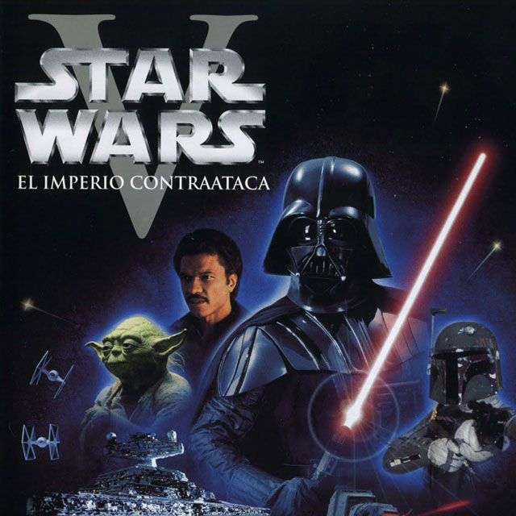

Proyecto de Ignacio Rinaldi

El imperio contraataca (Irvin Kershner, 1980)
La mejor película de los 80 es la considerada mejor película de Star Wars, la segunda de la saga galáctica pero el Episodio VII (si te lías mira el orden correcto de las películas de Star Wars).